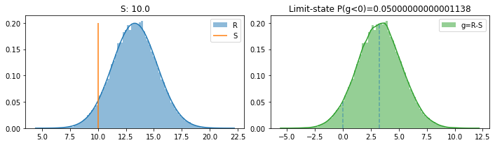
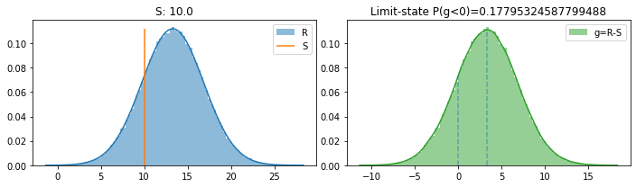
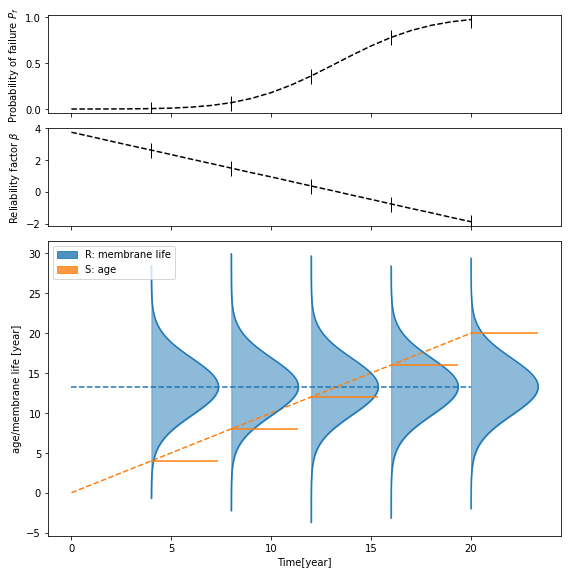

membrane module example
Raw parameter data
initialize model
run model
calibrate model
[1]:
%matplotlib inline
import numpy as np
from membrane import MembraneModel
[2]:
# Case study Raw parameter data
class Param: pass
raw_pars = Param()
# product information
raw_pars.life_product_label_life = 10 # year, defined as 95% confident non-failure
raw_pars.life_std = 0.2 * raw_pars.life_product_label_life # assume if not known, calibrate later for real service conditions
raw_pars.life_confidence = 0.95
# calibration data (if available)
# field survey result
raw_pars.membrane_failure_ratio_field = 0.01
raw_pars.membrane_age_field = 5 # [year]
[3]:
# initialize model
mem_model = MembraneModel(raw_pars)
# run and postproc (uncalibrated)
mem_model.run(10) # 10 years
mem_model.postproc(plot=True)
Pf(g = R-S < 0) from various methods
sample count: 0.05041
g integral: 0.05113193550262892
R S integral: 0.05000000000001138
beta_factor: 1.638666969042218

[6]:
# calibration to field data
mem_model_cal = mem_model.calibrate(raw_pars.membrane_age_field, raw_pars.membrane_failure_ratio_field)
probability of failure:
model: 0.010000011916189768
field: 0.01
[7]:
# run and postproc (calibrated)
mem_model_cal.run(10) # 10 years
mem_model_cal.postproc(plot=True)
Pf(g = R-S < 0) from various methods
sample count: 0.17826
g integral: 0.1796928990405702
R S integral: 0.17795324587799488
beta_factor: 0.9218308896882579

[6]:
# model with a list of time steps
t_lis = np.arange(0,21,1)
pf_lis, beta_lis = mem_model_cal.membrane_failure_with_year(year_lis=t_lis, plot=True, amplify=30)
